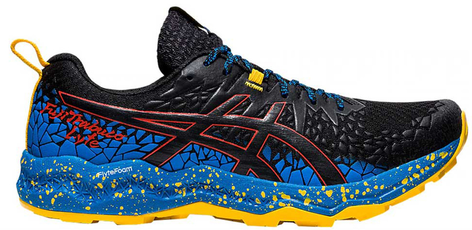
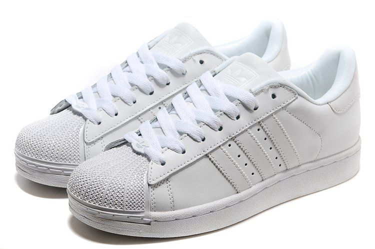

Лучшие кроссовки на Осень в 2023!
Asics Fujitrabuco Lyte
Модель 2021года Fujitrabuco 9 имеет хороший дизайн и, возможно, немного недооценена. В Fuji-T 9 есть все необходимые качества универсальной обуви для бега по бездорожью. Промежуточная подошва Flytefoam служит амортизирующим и защитным слоем; верхняя часть с большим количеством накладок хорошо защищает стопу. Однако, поскольку в FujiTrabuco 9 нет противокамневой пластины (как у 8ой версии), мы выбрали вместо нее Fujitrabuco Lyte. Хоть у нее (также) нет противокамневой пластины, ее прочная подошва обеспечивает достаточную защиту.Подошва Fujitrabuco Lyte с незамысловатым названием Asicsgrip превосходна - как с точки зрения резиновой смеси, так и геометрии выступов. Материал уверенно держит на скользких поверхностях, а агрессивные выступы обеспечивают глубокое сцепление. Это также одна из тех редких моделей, у которой удобная посадка верха, напоминающая асфальтовые кроссовки. Внутренняя часть не слишком узкая, поэтому стопа не чувствует себя скованной. Этому способствует то, что все накладки скреплены снаружи и не влияют на внутреннее пространство. Прорезиненные панели в средней части стопы обеспечивают защиту и надежную фиксацию стопы. Это не самая дышащая обувь, но если бы в Fujitrabuco использовалась открытая сетка, вам пришлось бы вытряхивать мелкий мусор каждые 5км. "Кармашек для шнурков" пригодится как нельзя кстати, когда потребуется заправить свободные концы шнурков.Прочная межподошва Flytefoam обеспечивает общую стабильность и защиту от ударов, а также достаточную амортизацию для длительных пробежек.Перепад с пятки на носок 4 мм способствует приземлению на полную или среднюю часть стопы - и это хорошо, когда речь идет о неровных поверхностях.
Adidas Superstar
Это классика, любимая многими поклонниками кроссовок и покупателями всех возрастов. Эти кроссовки пользуются популярностью благодаря своему дизайну, который сочетается практически с любым нарядом, не говоря уже о комфорте и доступной цене. Большинство людей удовлетворено моделью, хотя некоторые отметили, что качество ухудшилось. Обувь может большемерить, поэтому рекомендуется брать на полразмера меньше вашего. На момент презентации обуви модель представляла собой первую в истории Adidas модель с низким стаканом и полностью кожаной внешней выделкой, помимо того, что впервые была представлена резиновая защита пальцев ноги, внешне напоминающая ракушку. С резиновой защитой пальцев и не оставляющей следов на паркете подошвой, модель кроссовок привлекла внимание ведущих игроков NBA и NCAA, также крайне заинтересовав такого выдающегося игрока, каким был Карим Абдул-Джаббар. В течение первых полутора лет эту обувь стали носить более 75 % игроков NBA, а революционные инновации данной модели остаются актуальными и сегодня. В течение ряда последующих лет модель трансформируется из сугубо спортивной в кроссовки, являющиеся частью стиля casual, и превратившиеся в современную черту внешнего стиля молодёжи.